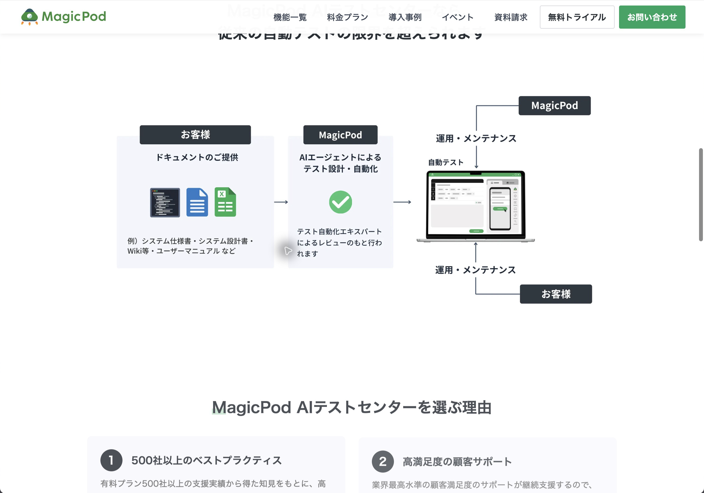

MagicPod AIテストセンター — 機能・導線・画面
確認日：2026年10月27日。全体比較・画面／動画ギャラリー
調査範囲
MagicPod本体のツール利用とは別に、設計・作成の仕事を引き取るサービス。
サービス図とフォームまで確認。見積・契約・設計レビュー・納品は未実施。独立した公開操作デモは未確認。
作業の流れ
相談 → 資料・範囲共有 → AIで観点・設計 → 専門家review → MagicPodに自動化 → 顧客／MagicPod運用
機能の構成
公開サービス図・FAQ・問い合わせ。本体のeditor・case・resultを成果物の運用先とする。
下表は公開説明・文書の要約。実操作した範囲は画面一覧と調査範囲に限定し、表全体を実機検証済みとはしない。
| 段階 | 画面・機能 | 入力・操作と次の行動 |
|---|---|---|
| 入力 | 開発資料 | manual・設計・手順等を提供する。 |
| 設計 | AI agent | 確認項目の洗い出し・テスト設計を行う。 |
| 確認 | 専門家review | AIの設計・作成内容を人がレビューする。 |
| 作成 | MagicPod automation | 本体上で編集可能な自動テストを作る。 |
| 受渡し | 顧客の資産 | 納品後に顧客が編集・運用できるテストとして残すと説明。 |
| 運用 | 主体を選ぶ | 顧客側でもMagicPod側でも運用・保守できる案内。 |
| 継続 | 変更・保守 | 契約ごとの支援量・引継ぎ・費用は相談で具体化する。 |
人の担当と比較上の着眼点
資料と業務期待を提供し、支援範囲・運用主体・納品物を決める。
調査者の解釈：ツール機能と顧客の作業を肩代わりするサービスの役割を分けて比較する。 製品性能の優劣を実証した結論ではない。
動画と見る場面
製品操作を確認できる動画を今回保存できていない。存在しない・非対応という意味ではない。問い合わせ画面で代用しない。
画面一覧
| 画面 | 種別 | 出典 |
|---|---|---|
 資料→AI設計・自動化→顧客／提供側運用（業務図） |
official-diagram | 掲載元 |